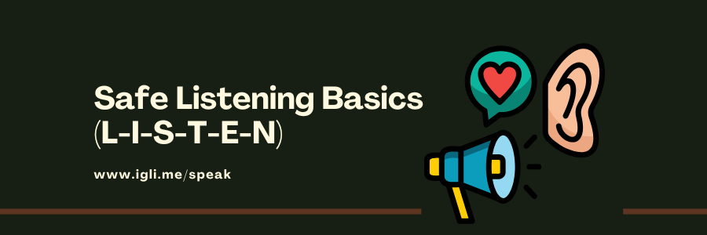
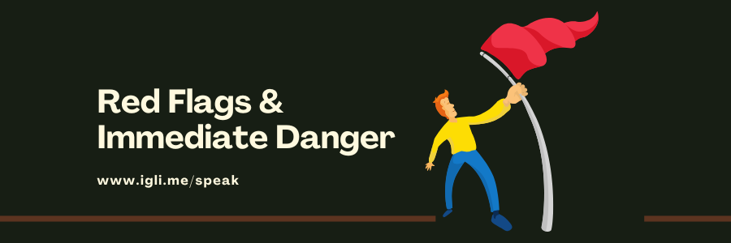
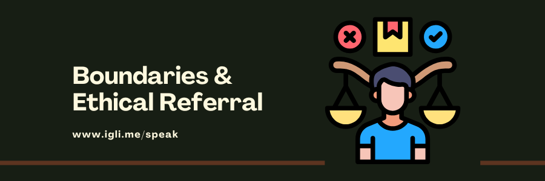
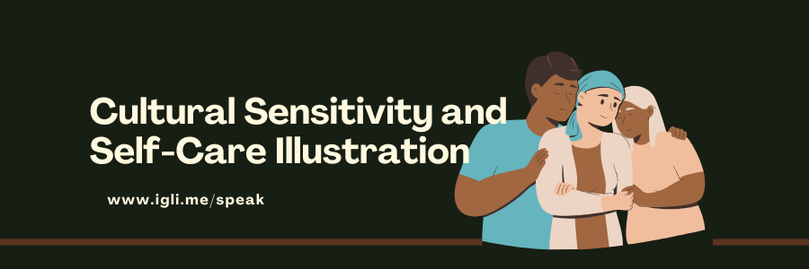

Start Your Certified Training
Complete the lessons and take the quiz. You have 10 minutes. Score at least 80% to earn your Volunteer Trained badge, gain +50 points, and download your certificate.
Lesson 1 — Safe Listening Basics (L-I-S-T-E-N)
This lesson teaches a simple step-by-step approach you can use anytime someone opens up about their feelings. We call it L-I-S-T-E-N: Listen, Inquire, Summarize, Thank, Empathize, Next steps. Think of it like a small bridge you build together—from confusion and isolation to clarity and support. You don’t need special powers or medical training to be helpful; you only need presence, patience, and a respectful, non-judgmental attitude.
When people feel heard, their stress often reduces enough to make safer choices and accept help. In many Nigerian contexts—campus life, church/mosque groups, hostels, busy homes—people may fear judgment or gossip. A calm volunteer who listens well can make a huge difference in a few minutes. You’re not fixing everything; you’re opening a door.
- L — Listen: Give full attention. Put your phone face-down, lower your voice, and remove distractions. Use comfortable silence—don’t rush to fill every gap. Nods and short words like “I hear you” can help them continue.
- I — Inquire: Ask open questions: “How long have you felt this way?” “What helps you on better days?” Avoid yes/no questions at the start. Be curious, not intrusive.
- S — Summarize: Repeat key points in your own words: “So, the pressure at school plus money worries are affecting your sleep.” Summaries prove you understood and allow them to correct anything you missed.
- T — Thank: “Thank you for trusting me.” Sharing is hard—appreciation builds safety.
- E — Empathize: Validate feelings without judging. “That sounds heavy.” “It makes sense you feel overwhelmed.” Empathy ≠ agreement with every detail; it’s respect for their experience.
- N — Next steps: Agree one small step together—drink water, try a breathing tip, message a trusted adult, or browse nearby clinics. Keep steps realistic for today, not perfect for the next five years.
- Open question: A question that invites details (not just yes/no). Example: “What was the hardest part of today?”
- Summarize: Briefly repeat the main points to check accuracy and show understanding.
- Empathy: Communicating “I get that this is tough” without blaming, shaming, or rushing.
- Do: Keep a calm tone, allow pauses, ask permission before sensitive questions.
- Don’t: Preach, compare (“others have it worse”), or dismiss (“just be strong”).
Mini scenario: Femi says, “I’m tired of everything.” You might say, “I’m glad you told me. Can you share what today felt like?” Then summarize: “It sounds like school deadlines and family pressure are piling up.” Empathize: “That’s a lot for one person.” Next step: “Would you like a quick breathing exercise or to see clinic options near campus?”
Reflection: Which phrases help you show empathy without giving advice too soon?
Lesson 2 — Red Flags & Immediate Danger
Your first responsibility is safety. Most conversations will be non-urgent, but sometimes you’ll hear red flags that mean immediate action is needed. You are not alone—escalation to emergency services or a supervisor is not failure; it’s good practice.
- Active self-harm plan or intent (“I plan to take pills tonight”).
- Current violence or threat of violence (domestic, campus, community).
- Someone is missing, unconscious, or cannot stay safe right now.
- Child or vulnerable adult at risk (safeguarding concern).
- Severe symptoms: command hallucinations (“a voice tells me to harm myself”), extreme agitation, or confusion.
- Stay present on the call/chat; keep your voice steady: “Your safety matters. I’m here with you.”
- Call 112 (or the local emergency number). If on chat, ask where they are and if someone nearby can help.
- Inform your supervisor/safeguarding lead as your protocol requires.
- Log minimal facts: date, concern, action taken. No full names or private details.
Language tips: Be clear and kind: “Because your safety is the priority, I need to involve emergency help now.”
Boundary tip: If a person refuses help and you believe there is imminent risk, follow your escalation protocol. Safety beats popularity.
Mini scenario: Ada says, “I bought pills.” You might reply, “Thank you for telling me. Are you alone now? I’m calling 112 to get help to you. Stay with me on the line.”
Reflection: Which steps help you stay calm while moving quickly in a crisis?
Lesson 3 — Boundaries & Ethical Referral
Volunteers are powerful connectors—you offer support and link people to care. Boundaries protect the person and protect you. Ethical referral means you offer choices, seek consent, and respect dignity through every step.
- Your scope: Listening, emotional support, information, and referral. You do not diagnose, prescribe, or promise outcomes.
- Availability: Agree realistic times. If you say you’ll check in tomorrow, keep it. Don’t promise 24/7 access.
- Personal safety: Meet in safe, public spaces if in-person; use official lines/accounts for communication.
- Ask consent: “Would you like clinic or phone support options?”
- Offer choices: Provide 2–3 reputable options (public/private/faith-based/WhatsApp/phone). Avoid pressuring.
- Match needs: If money is a barrier, highlight affordable services. If mobility is an issue, highlight tele-options.
- Plan follow-up: “If you like, I can check in with you in two days to hear how it went.”
- Boundary: A healthy limit that keeps support safe and sustainable (for both people).
- Referral: Sharing pathways to professional or community services for ongoing help.
- Consent: Clear “yes” after understanding what will happen with their information.
Mini scenario: “I’m scared to go alone.” You: “Would a phone helpline or WhatsApp chat help for a start? We can also plan one small step together today.”
Reflection: What respectful words can you use to offer choices without pressure?
Lesson 4 — Privacy-First Logging (Minimum Necessary)
Good notes help your team improve support while protecting people’s privacy. Record only what is necessary to understand the concern and the action taken, not the person’s identity or private story. Imagine your log will be read in a team review: it should be short, respectful, and useful.
- Date/time: “2025-11-12, 3:15pm.”
- General concern: “Worry and poor sleep,” “Exam stress,” “Relationship conflict.”
- Action taken: “Shared breathing tip + Abuja clinic list,” “Escalated to supervisor,” “Crisis: called 112.”
- Full names, phone numbers, hostel addresses, screenshots, or private photos.
- Gossip or opinions (“person is dramatic”). Keep tone neutral and kind.
- Long transcripts. Summaries are safer and more helpful.
- Use approved tools only (not personal WhatsApp chats or random notebooks).
- Restrict access to authorized team members; set a sensible retention period.
- When in doubt, ask your supervisor how to store a note safely.
Good example: “2025-11-12 • anxiety & sleep • taught 4-7-8 breathing; offered clinic options; person chose WhatsApp helpline.”
Reflection: How can you write a helpful log in one or two lines?
Lesson 5 — Cultural Sensitivity & Volunteer Self-Care
Nigeria (and Africa at large) is rich with different languages, beliefs, and customs. Cultural sensitivity means you respect how people understand mental health, family roles, and faith. At the same time, you must also care for yourself: listening can be emotionally heavy, and your wellbeing matters.
- Ask preferences: “What name and language should we use?”
- Honor beliefs: If someone leans on prayer, validate it and suggest complementary supports (helplines, clinics).
- Avoid labels: Replace words like “crazy” with “going through a hard time.”
- Seek to understand: “Can you help me understand how this affects you at home/school?”
- Debrief: After tough chats, speak with a supervisor. Don’t carry it alone.
- Recharge: Hydrate, stretch, rest your eyes. Set limits on how many heavy conversations you handle in a day.
- Know your signs: If you feel overwhelmed or helpless, pause and escalate. You are not failing—you’re protecting yourself and the person.
Mini scenario: Someone says, “My family thinks counseling is shameful.” You: “I understand those concerns. Many people combine faith, family support, and short counseling to feel better. Would you like to see options you can choose from?”
Reflection: What boundaries help you stay compassionate without burning out?
Volunteer Quiz
Pass mark: 80% Time: 10:00 Attempts this month: 0 / 2